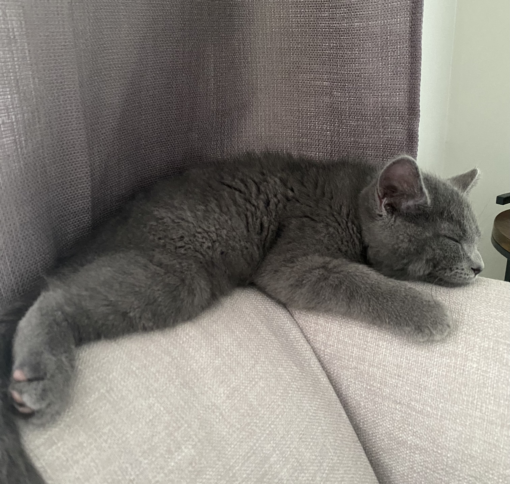
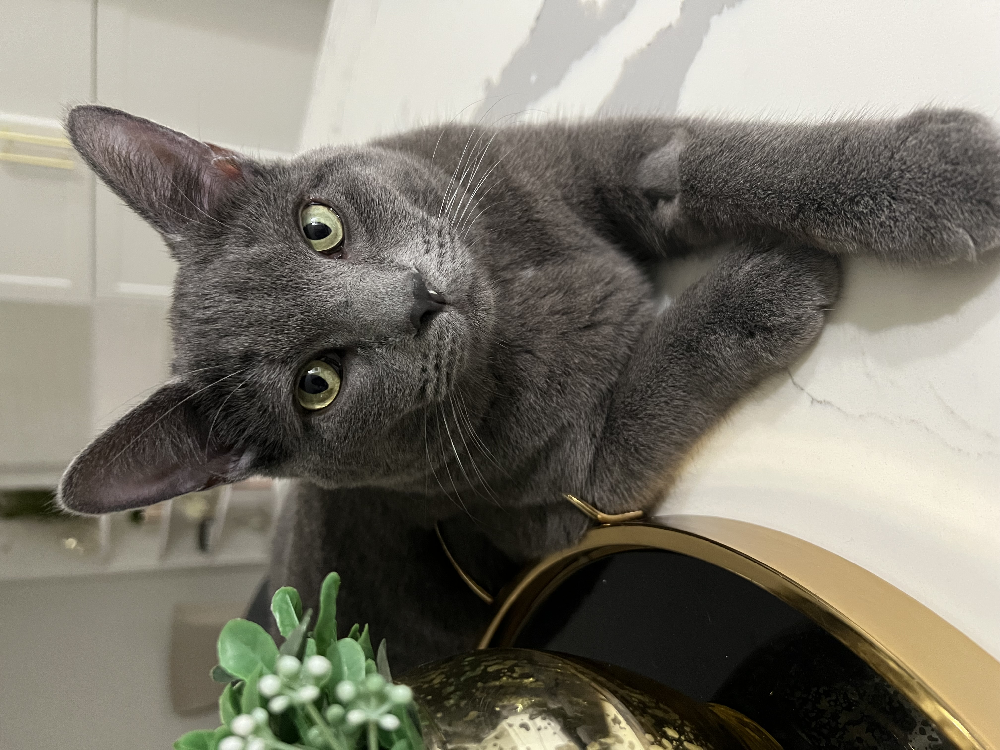

The Korat is a small to medium-sized cat breed that originated in Thailand. They are known for their striking blue-grey coat, which is short, glossy, and often described as "metallic". They have large, round, green eyes, and their body is muscular and lean. Korats have a distinctive heart-shaped face and a friendly, affectionate personality. They are intelligent and curious cats that thrive on human interaction and attention, and they make great pets for families and individuals alike.
The history of Korat cats can be traced back to ancient Thailand, where they were revered as symbols of good luck and prosperity. They were known as "Si-Sawat" in Thai, which means "color of the sawat seed", a reference to their blue-grey coat. Korats were highly valued and often given as gifts to important people, such as royalty and Buddhist monks. It wasn't until the mid-20th century that Korats were introduced to the Western world, and they quickly gained popularity as pets due to their unique appearance and friendly personality.
